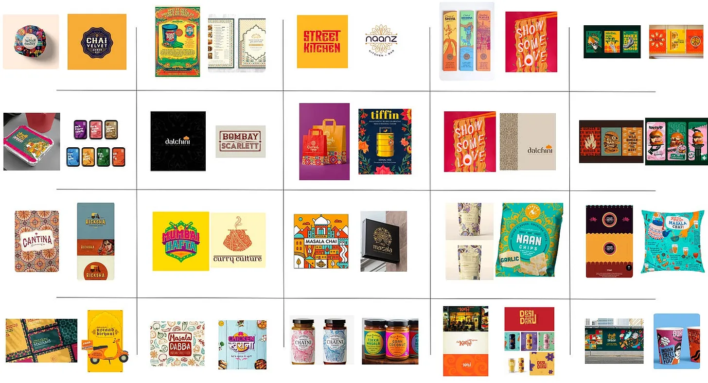
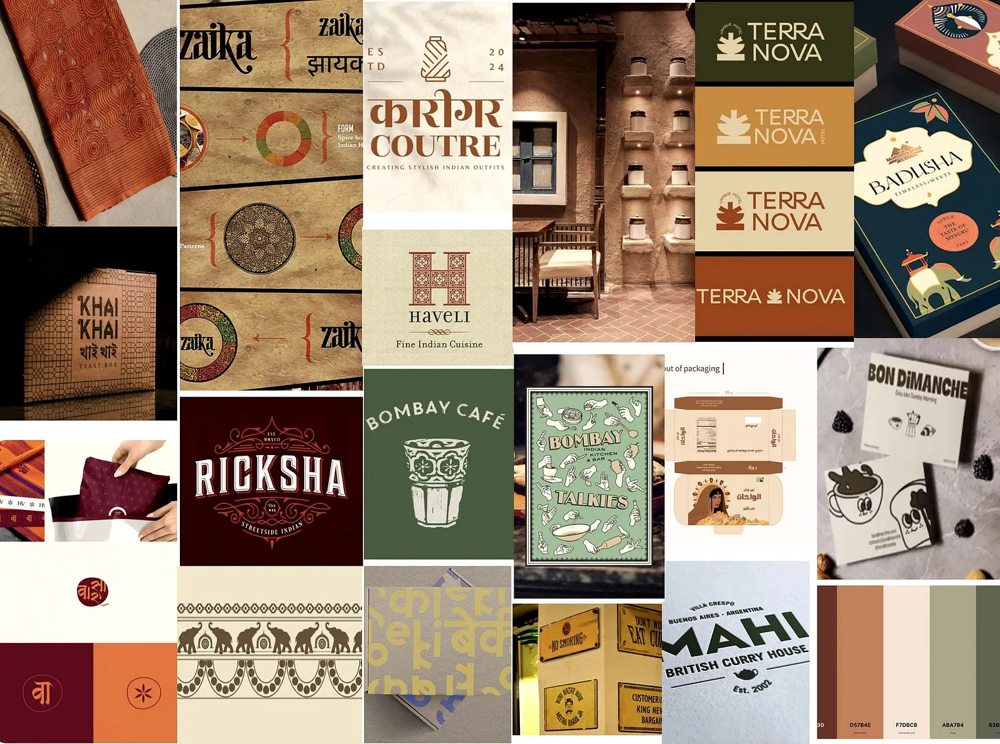
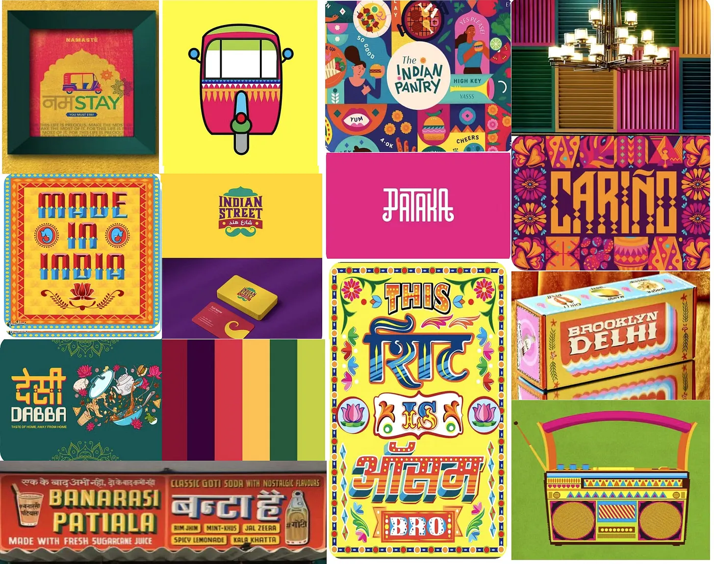

Where it began
My family’s Indo-Chinese restaurant had a menu we loved, but its existing branding didn’t feel as approachable or welcoming as we wanted. I took on my first rebranding project to explore an identity that felt warm, familiar, and connected to the food we served.
I wanted the new brand to feel friendly to the local community while showing the variety and flavor of the menu.
Finding a direction together
I began by looking at Indian food culture and how other restaurants presented themselves. My parents’ perspectives were especially valuable: I showed them 20 pairs of food brands and asked which designs they preferred. Our conversations helped me understand the visual cues that felt right for the restaurant.

I explored ideas through keywords, sketches, and moodboards. One direction leaned into earthy tones and nostalgia; another was brighter and more playful. Comparing them helped me find a balance between familiarity and energy.


From names to a logo
I explored two names, Local Canteen and Desi Canteen. After feedback from friends and family, Desi Canteen felt like the stronger fit. I started with rough sketches for both names, then kept refining the ideas as I developed them digitally.
Friends and family helped me choose between the final logo options. The circular design became part of a story about togetherness: a place where everyone belongs.
Bringing the identity to life
I tried the identity in mockups for menus, packaging, signs, and other applications. An earthy palette felt right for the welcoming, nostalgic direction, while illustrations and patterns brought in playful references to Indian food culture.
for togetherness
for clarity
for warmth
What I learned
This was my first ever branding project, and I learned so much along the way. I really enjoyed the whole process, from researching and brainstorming names to finally seeing the identity come together in the mockups.